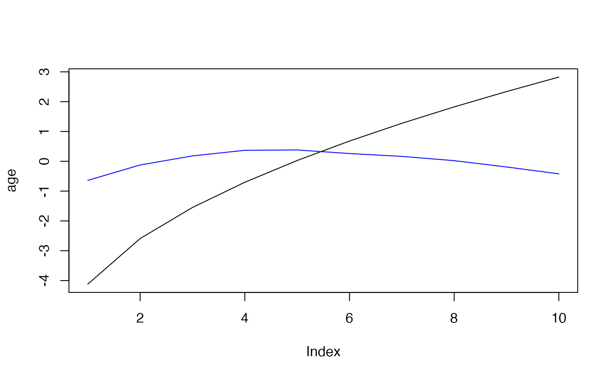
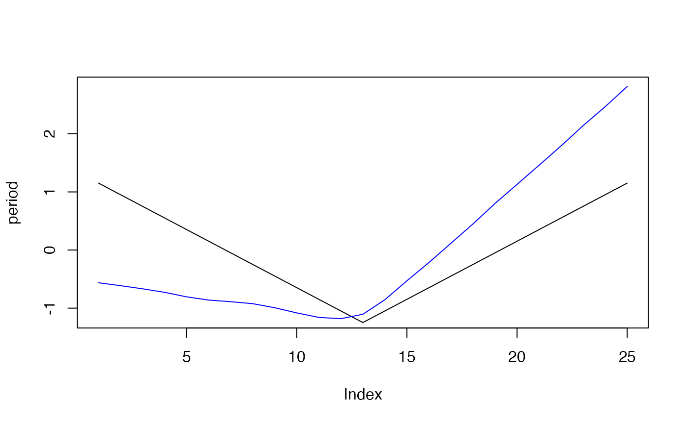
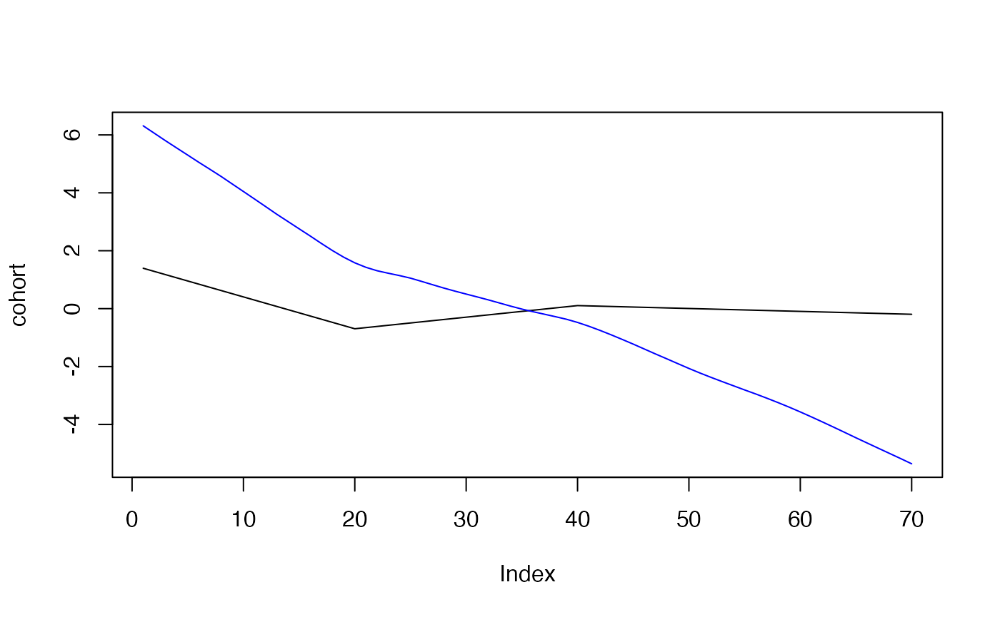

Simulating Age-Period-Cohort Data
Volker Schmid
2026-06-10
Source:vignettes/largevignettes/simulation.Rmd
simulation.Rmd
periods_per_agegroup=5
number_of_cohorts <- periods_per_agegroup*(10-1)+15
cohort<-rep(0,60)
cohort[1:15]<-(14:0)
cohort[16:30]<- (1:15)/2
cohort[31:60]<- 8
cohort<-cohort/10
cohort<-cohort-mean(cohort)
plot(cohort, type="l")
simdata<-apcSimulate(-10, age, period, cohort, periods_per_agegroup, 1e6)
print(simdata$cases)## [,1] [,2] [,3] [,4] [,5] [,6] [,7] [,8] [,9] [,10]
## [1,] 0 10 22 52 85 114 172 413 1122 2991
## [2,] 4 5 19 46 62 98 140 314 840 2246
## [3,] 1 5 15 36 63 94 132 211 605 1646
## [4,] 0 4 9 36 52 85 114 158 458 1232
## [5,] 1 2 8 22 57 61 76 118 353 900
## [6,] 1 0 7 22 25 56 90 122 264 653
## [7,] 1 4 7 12 38 50 74 94 157 507
## [8,] 0 0 8 7 40 51 61 81 147 393
## [9,] 0 4 12 18 40 57 72 116 132 406
## [10,] 1 2 7 21 40 81 110 142 158 399
## [11,] 0 6 12 16 57 83 116 174 200 505
## [12,] 0 7 9 31 52 98 163 228 262 564
## [13,] 0 10 16 40 65 143 213 267 350 580
## [14,] 1 10 19 37 92 152 273 376 428 665
## [15,] 2 8 15 56 129 228 341 435 567 779
simmod <- bamp(cases = simdata$cases, population = simdata$population, age = "rw1",
period = "rw1", cohort = "rw1", periods_per_agegroup =periods_per_agegroup)
print(simmod)##
## Model:
## age (rw1) - period (rw1) - cohort (rw1) model
## Deviance: 161.88
## pD: 48.88
## DIC: 210.76
##
##
## Hyper parameters: 5% 50% 95%
## age 0.517 1.242 2.503
## period 14.810 28.145 48.407
## cohort 82.838 129.092 196.477
##
##
## Markov Chains convergence checked succesfully using Gelman's R (potential scale reduction factor).
checkConvergence(simmod)## [1] TRUE
plot(simmod)
effects<-effects(simmod)
effects2<-effects(simmod, mean=TRUE)
#par(mfrow=c(3,1))
plot(age, type="l")
lines(effects$age, col="blue")
lines(effects2$age, col="green")


prediction<-predict_apc(simmod, periods=5, population=array(1e6,c(20,10)))
plot(prediction$cases_period[2,], ylim=range(prediction$cases_period),ylab="",pch=19)
points(prediction$cases_period[1,],pch="–",cex=2)
points(prediction$cases_period[3,],pch="–",cex=2)
for (i in 1:20)lines(rep(i,3),prediction$cases_period[,i])
plot(prediction$period[2,])
cov_p<-rnorm(15,period,.1)
simmod2 <- bamp(cases = simdata$cases, population = simdata$population, age = "rw1",
period = "rw1", cohort = "rw1", periods_per_agegroup = periods_per_agegroup,
period_covariate = cov_p)## Warning: MCMC chains did not converge!
print(simmod2)##
## WARNING! Markov Chains have apparently not converged! DO NOT TRUST THIS MODEL!
##
## Model:
## age (rw1) - period (rw1) - cohort (rw1) model
## Deviance: 161.78
## pD: 48.92
## DIC: 210.70
##
##
## Hyper parameters: 5% 50% 95%
## age 0.541 1.229 2.520
## period 14.605 28.150 48.603
## cohort 80.226 129.314 197.128
checkConvergence(simmod2)## Warning: MCMC chains did not converge!## [1] FALSE
plot(simmod2)